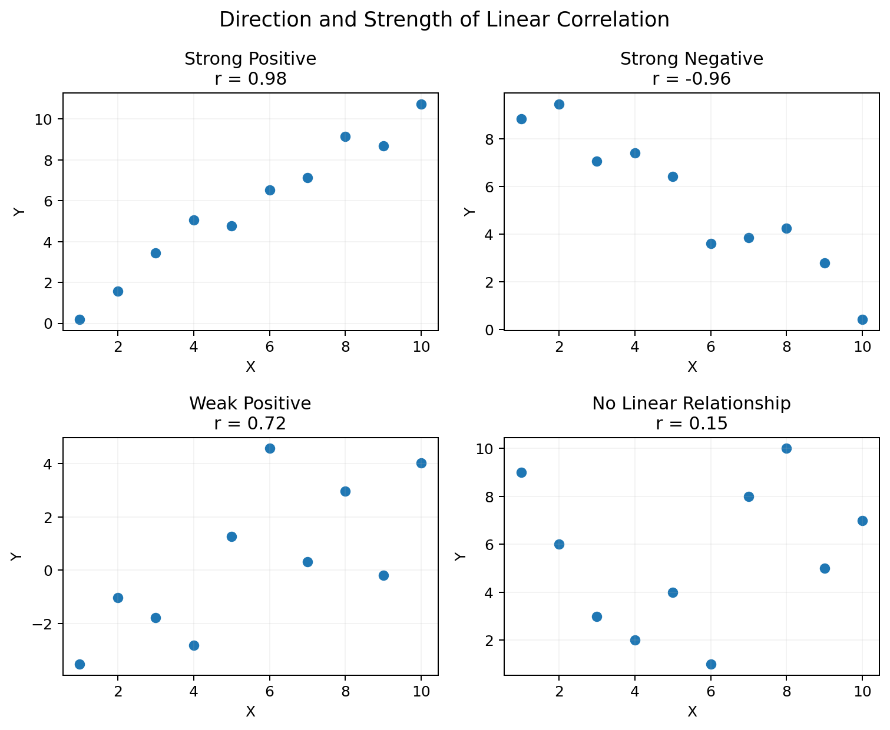
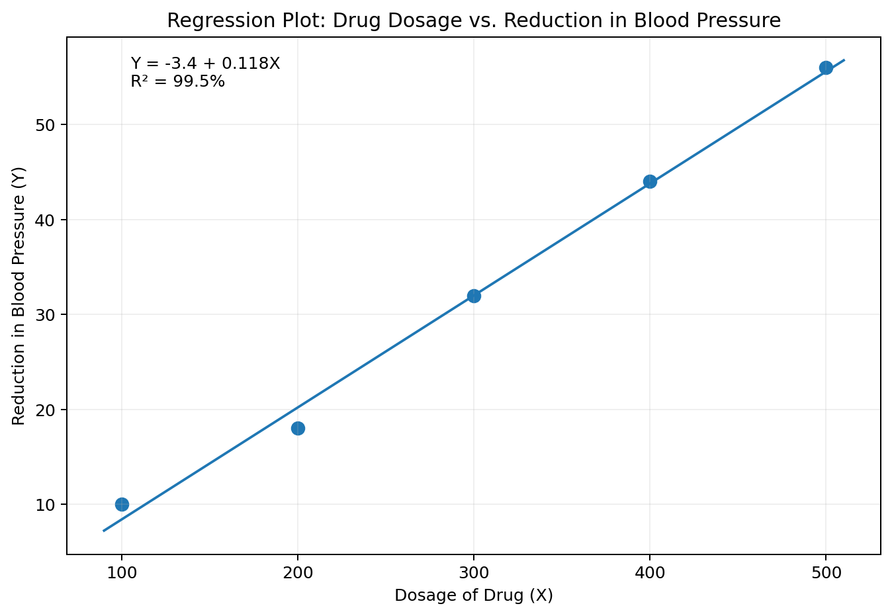
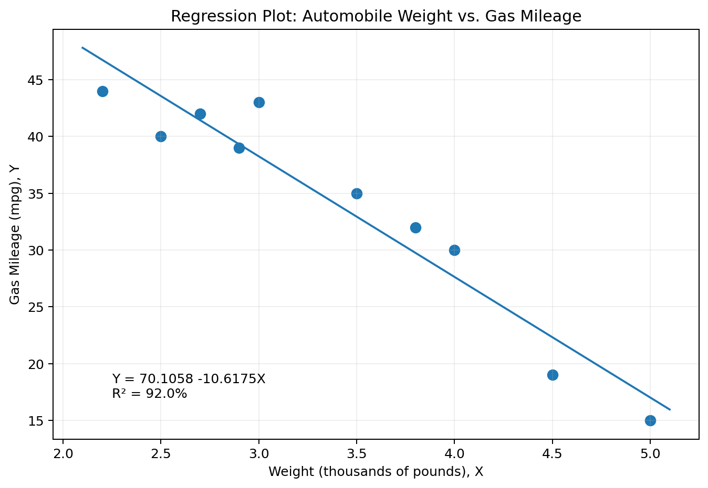
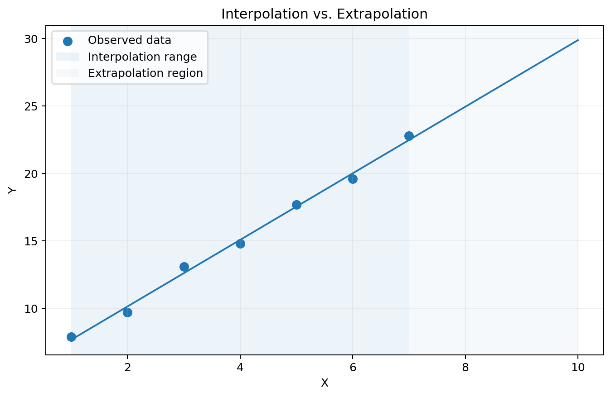
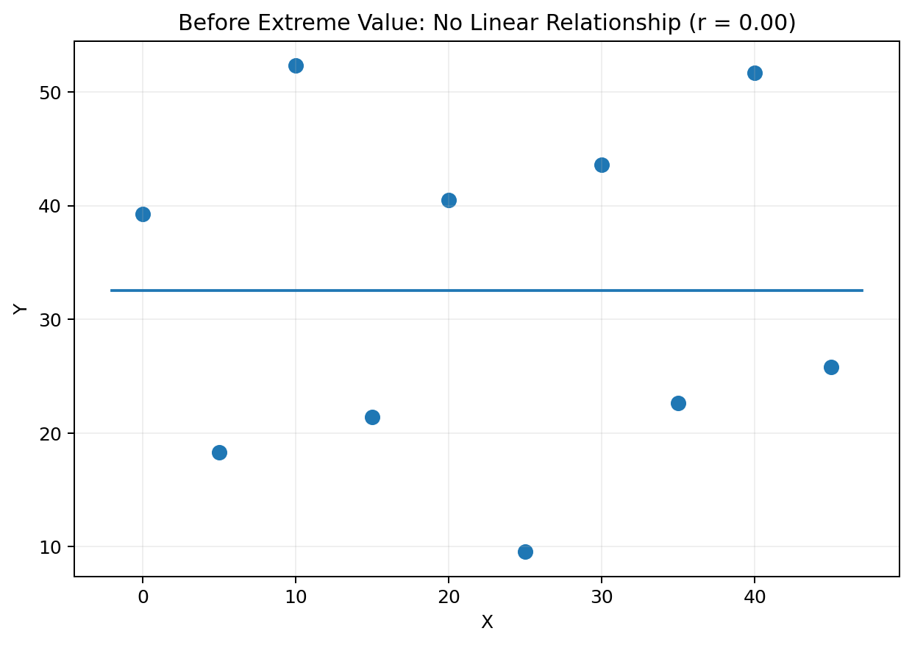
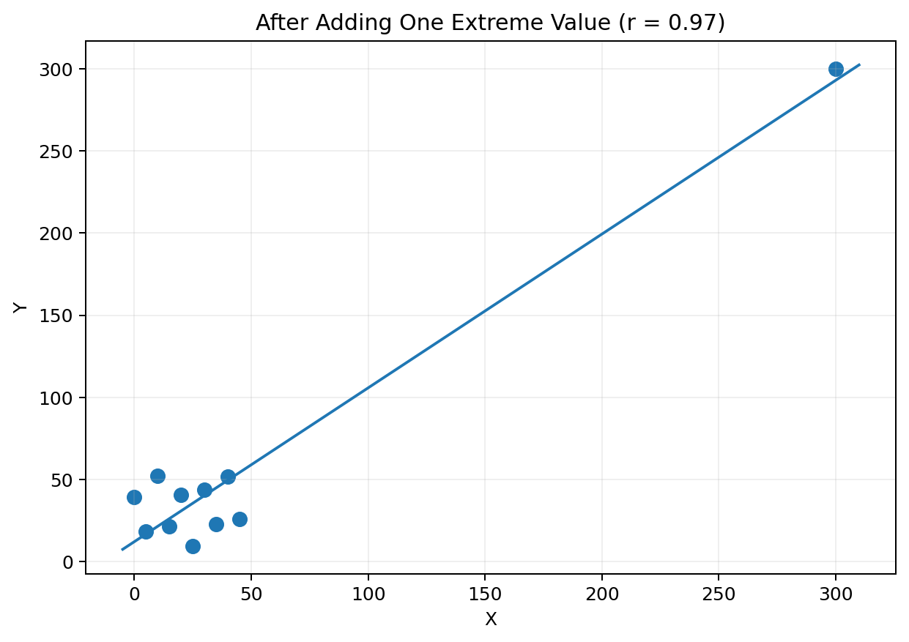

Pearson Product-Moment Correlation Coefficient, \(r\) — describes the direction and strength of a linear relationship between two quantitative variables.
It is important to notice that \(r\) only indicates the linear relationship. Another kind of relationship could still be present in the data.
You will not need to calculate \(r\) by hand, but the formula is:
Positive \(r\) means larger X values tend to occur with larger Y values. Negative \(r\) means larger values of one variable tend to occur with smaller values of the other.
Strength describes how close the points are to a line.
\[-1\le r\le1\]
\(r=1\): perfect positive linear correlation.
\(r=-1\): perfect negative linear correlation.
\(r=0\): no linear relationship, although another kind of relationship may exist.
In this course, a relationship is generally considered strong when \(|r|\ge .75\).

Direction and Strength of Linear Correlation
Drug Dosage Example
Dosage of Drug, X
Reduction in Blood Pressure, Y
100
10
200
18
300
32
400
44
500
56
The scatterplot indicates a very strong positive linear relationship:
\[r=.99728\]
R-Squared
\(R^2\) — the percent of variation in Y explained by the model. In simple linear regression, \(R^2=r^2\).
\[0\%\le R^2\le100\%\]
\[R^2=(.99728)^2\approx.995=99.5\%\]
2. Cause and Effect
“Causal” Research — research whose objective is to determine whether one variable causes changes in another.
Correlation Does Not Imply Causation
It is never possible to prove causality just from the relationship between two variables.
Ice Cream and Assaults
The notes give an example of a strong correlation between ice cream consumption and assaults over the months of the year. That does not mean ice cream causes crime. Hot summer temperatures can increase both variables.
Criteria for Establishing a Causal Relationship
Time order: the cause must occur before the effect.
Co-variation: the graph and correlation coefficient must show a strong relationship.
Rationale: there must be a logical and compelling explanation for the causal mechanism.
Non-spuriousness: rival explanations must be ruled out.
The fourth criterion is especially difficult. Repeating studies under differing conditions can help rule out rival explanations.
3. Linear Regression
Deterministic View — once X is known, the exact value of Y is known.
Regression — a technique used to predict variables based on other variables.
Linear Regression — predicts Y, the response variable, from X, the explanatory variable, using a linear equation.
Prediction is not exact. The error is represented by the vertical distance between a point and the regression line.
\[\hat{Y}=b_0+b_1X\]
\(b_0\) is the y-intercept.
\(b_1\) is the slope.
Before fitting a line, the scatterplot and \(r\) should indicate that a linear model is reasonable.
Method of Least Squares
Method of Least Squares — minimizes the sum of the squared vertical distances from the observed points to the regression line.
\[b_1=\frac{SXY}{SSX}\]
\[b_0=\bar{y}-b_1\bar{x}\]
Drug Dosage Regression
\[b_1=.118\qquad b_0=-3.4\]
\[\hat{Y}=-3.4+.118X\]

Regression Plot for Drug Dosage and Reduction in Blood Pressure
If \(R^2\) is provided instead of \(r\), take the square root of \(R^2\) and use the sign of the slope to determine whether \(r\) is positive or negative.
Prediction Example
Predict reduction in blood pressure if dosage is 250.
Show Answer
\[\hat{Y}=-3.4+.118(250)=26.1\]
Automobile Weight and Gas Mileage
Weight, X (1000 lb)
Gas Mileage, Y (mpg)
2.5
40.0
3.0
43.0
4.0
30.0
3.5
35.0
2.7
42.0
4.5
19.0
3.8
32.0
2.9
39.0
5.0
15.0
2.2
44.0

Regression Plot: Automobile Weight vs. Gas Mileage
\[R^2=92.0\%\qquad \hat{Y}=70.1058-10.6175X\]
Questions
Calculate \(r\).
Based on \(r\) and the scatterplot, is linear regression justified?
Predict the gas mileage for a car weighing 4.2 (4,200) pounds.
Show Answers
1. The slope is negative, so:
\[r=-\sqrt{.92}\approx-.959\]
2. Yes. \(|r|\ge.75\) and the scatterplot is reasonably linear.
3.
\[\hat{Y}=70.1058-10.6175(4.2)\approx25.512\]
Cautions with Regression
Interpolation — predicting Y for X values within the observed range.
Extrapolation — predicting Y for X values beyond the observed range. This should not be done with a basic regression model.

Interpolation vs. Extrapolation
In the drug example, X ranges from 100 to 500. Predicting within that range is reasonable. Predicting at X = 1000 assumes the relationship continues beyond the observed data.
Extreme Values Can Distort Regression
The least-squares line and \(r\) can be affected greatly by extreme data points.

Before Adding an Extreme Value

After Adding One Extreme Value
These two graphs recreate the teaching point from the notes because the original raw coordinates for the final extreme-value example were not included in the extracted text.
An influential extreme point can make the remaining observations look compressed and artificially close to a line. Remove an extreme value temporarily and check whether the relationship still exists before trusting the regression.